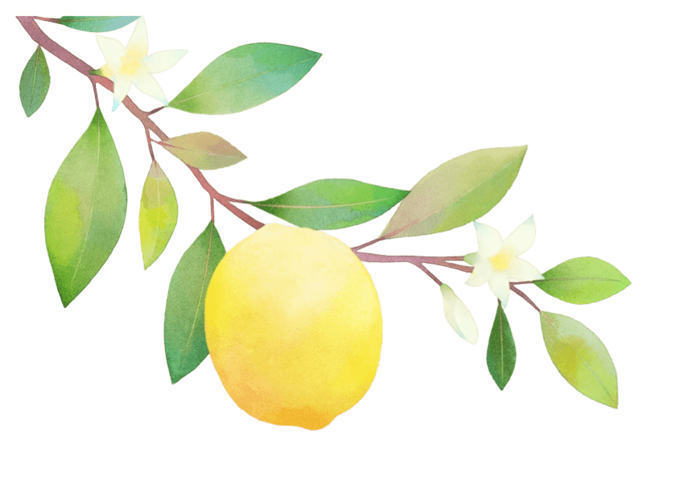
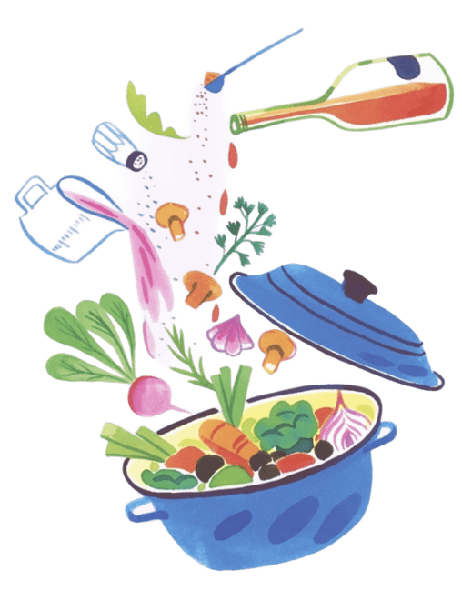
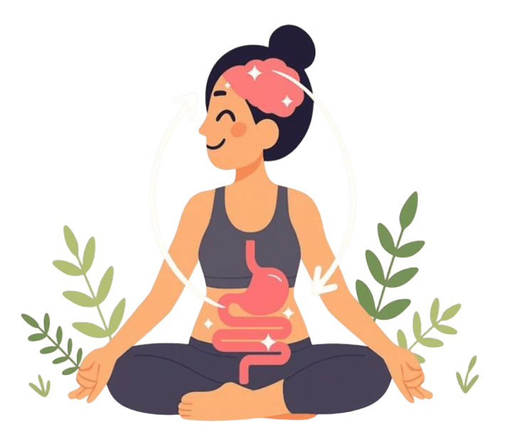
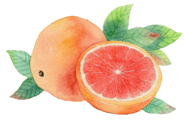
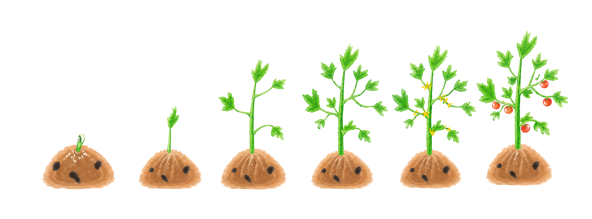

Retrouver un équilibre alimentaire adapté à votre quotidien

Juliet Clavel
Diététicienne · Nutritionniste à Saint-Jean (31)
« Chaque parcours est unique, chaque alimentation aussi. »
Prendre rendez-vousPar téléphone au 07 43 76 50 40 ou via le formulaire
Ma vision de la nutrition
Une alimentation qui s'adapte à vous, pas l'inverse.
La nutrition est un véritable outil de santé, qui doit s'adapter à chaque personne, son histoire, ses besoins et son quotidien.
Mon approche repose sur une alimentation équilibrée, flexible et durable, loin des restrictions.
L'objectif est de vous accompagner pour mieux comprendre votre alimentation, retrouver confiance dans vos choix et avancer vers vos objectifs de manière sereine.
Chaque changement compte : il s'agit de construire ensemble des habitudes adaptées, qui prennent leur place naturellement dans votre vie.
« Chaque parcours est unique, chaque alimentation aussi. »


Pourquoi consulter une diététicienne ?
L'alimentation joue un rôle essentiel dans notre santé et notre bien-être au quotidien.
Je peux vous accompagner, quelque soit votre âge, pour :
Être soutenu(e) dans une démarche de perte ou de prise de poids
Adapter votre alimentation à vos besoins spécifiques : fatigue, troubles digestifs, pathologies, changements physiologiques, activité physique…
Améliorer votre bien-être et votre santé
Mieux comprendre votre alimentation et faire des choix adaptés
Retrouver une relation plus sereine avec l'alimentation
Tarifs
Des consultations accessibles,
Des consultations accessibles,
à chaque étape.
Un accompagnement clair et adapté à votre situation, sans engagement inutile.

| Consultation | Tarifs |
|---|---|
|
1ère consultation
Bilan complet · environ 60 min
|
60 € |
|
Suivi
Consultation de suivi · environ 30 min
|
45 € |
|
Forfait 3 séances
Bilan + 2 suivis inclus
|
135 € |
|
Suivi étudiants et moins de 18 ans
|
40 € |
* Règlement accepté uniquement par chèque ou espèces.
Toute consultation non honorée sans prévenir ou annulée moins de 24h à l'avance sera facturée : 50 € pour un bilan · 40 € pour un suivi.
Mon parcours
Une approche scientifique
Une approche scientifique
au service de l'humain.

Formation scientifique
Licence de Biologie, spécialité Physiologie et Biologie Cellulaire, obtenue à la Faculté Paul Sabatier de Toulouse. Cette formation constitue une base scientifique pour comprendre les mécanismes du corps humain et développer une approche rigoureuse de la santé. Elle m'a également appris à analyser les données scientifiques avec recul afin de proposer des conseils fiables et adaptés.
Diplôme de diététique
BTS Diététique obtenu au CPES Toulouse. Cette formation professionnalisante permet de construire un accompagnement nutritionnel adapté à chaque personne. Elle m'a formée à l'évaluation des besoins, à l'éducation nutritionnelle et à la conception de prises en charge concrètes.
Spécialisation
Bachelor Chargé de Nutrition spécialisé dans les TCA et l'alimentation du sportif. Cette formation enrichit mes connaissances grâce à une approche approfondie des enjeux nutritionnels et comportementaux. Cette spécialisation permet de mieux prendre en compte la relation à l'alimentation, le rythme de vie et les objectifs propres à chacun.
Expérience clinique
Des expériences en milieu thérapeutique à la Clinique de Blagnac et à la Clinique de Castelviel, ainsi qu'un stage à la Ligue contre le cancer, m'ont permis de développer une approche centrée sur l'écoute et l'accompagnement personnalisé de chaque patient. Elles ont renforcé ma capacité à m'adapter à des situations de santé et à des parcours de vie très différents.
Je suis convaincue qu'une alimentation adaptée doit avant tout être personnalisée, réaliste et en accord avec les besoins, les objectifs et le quotidien de chacun.
Au-delà des connaissances théoriques, mes expériences en milieu thérapeutique m'ont permis de développer une approche centrée sur l'écoute et l'accompagnement de chaque personne.
Me contacter
Cabinet de Saint-Jean (31240)
Adresse
9 Av. de Lapeyrière, 31240 Saint-Jean
Cabinet en RDC, accessible aux personnes en situation de handicap.
- Parking sur place gratuit
- Bus 76 arrêt Harkis (correspondance ligne A, station Argoulet)
- Bus 73 arrêt école Saint-Jean (correspondance ligne B, station Borderouge)
Téléphone
07 43 76 50 40
Email
juliet.diet@yahoo.com